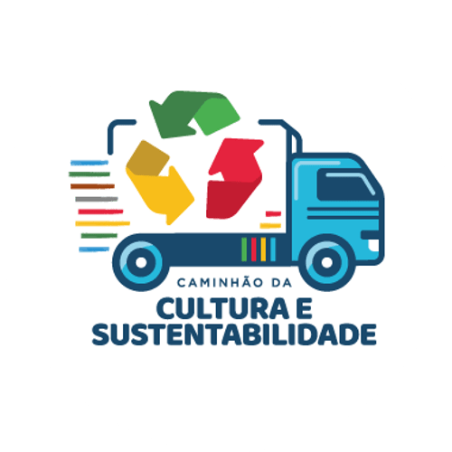
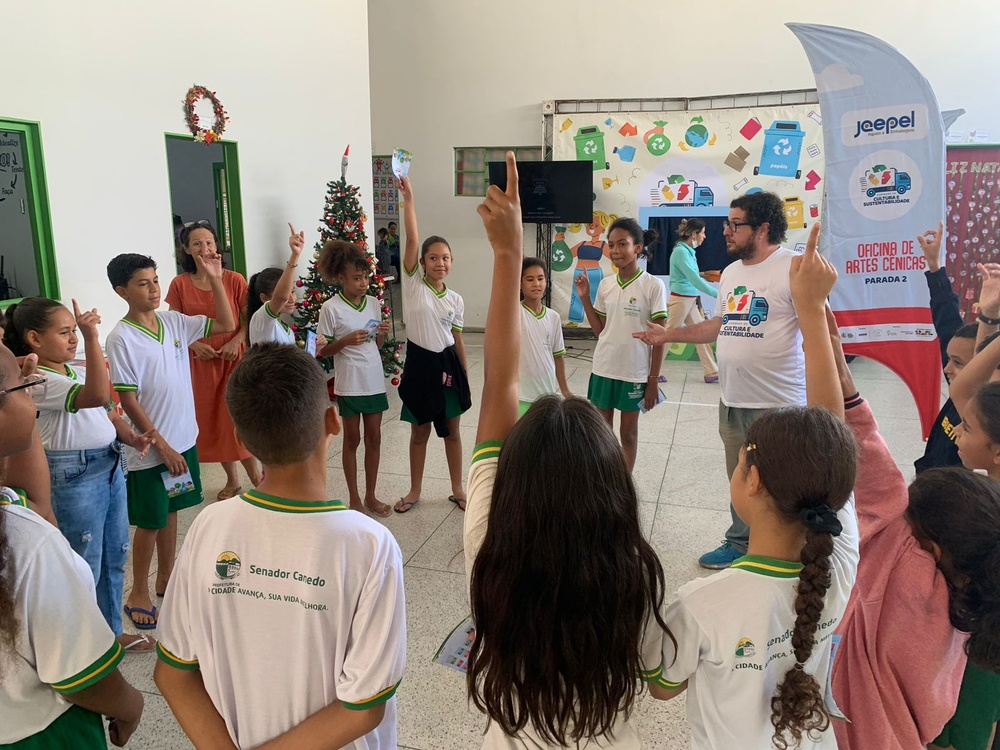
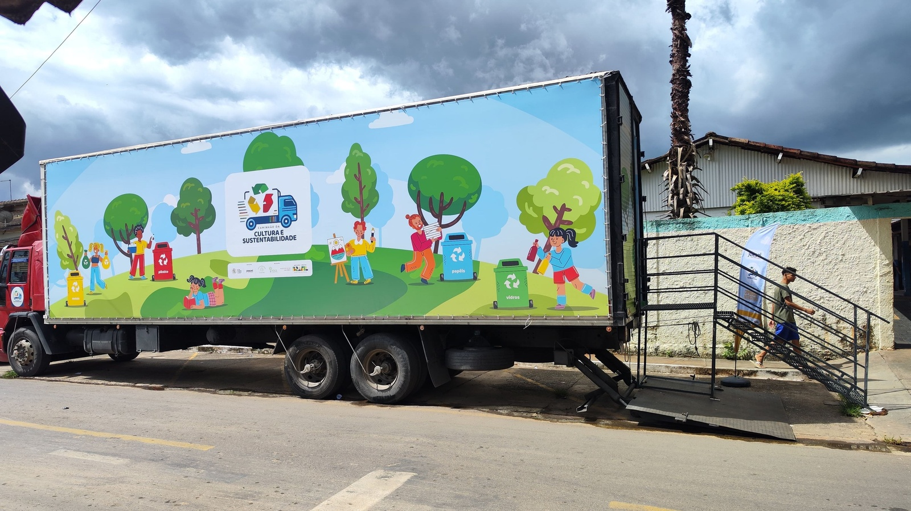
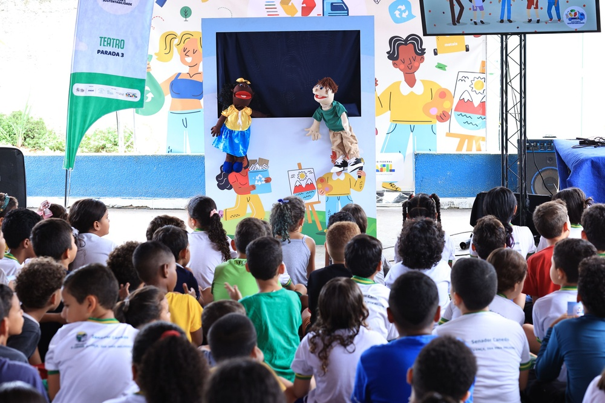
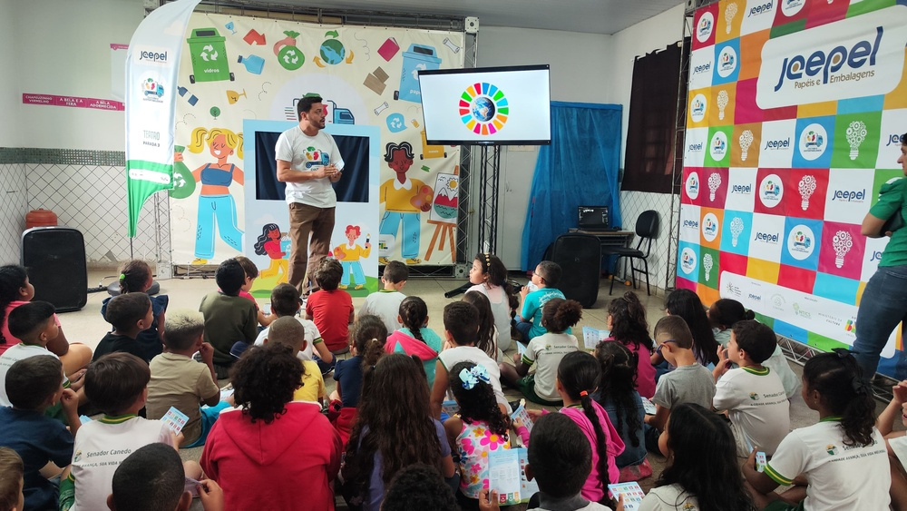
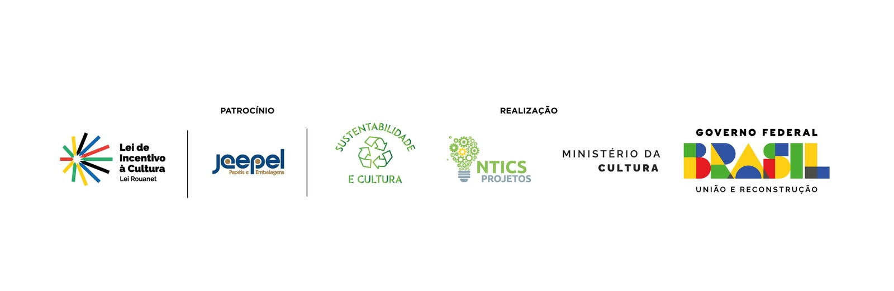

SENADOR CANEDO - GO
"Uma jornada onde a arte inspira mudanças e a sustentabilidade transforma realidades."



"Uma jornada onde a arte inspira mudanças e a sustentabilidade transforma realidades."
"Uma jornada onde a arte inspira mudanças e a sustentabilidade transforma realidades."
O Caminhão da Cultura e Sustentabilidade foi desenvolvido como um espaço cultural itinerante, levando diversas atrações artísticas para várias cidades. Com um container personalizado, o projeto ofereceu à população local uma experiência rica e diversificada, integrando teatro, música, artes visuais e oficinas com foco em temas de sustentabilidade. A iniciativa promoveu a conscientização ambiental e a valorização da cultura como ferramenta de transformação social, impactando comunidades e incentivando práticas sustentáveis.
"Uma jornada onde a arte inspira mudanças e a sustentabilidade transforma realidades."

O Caminhão da Cultura e Sustentabilidade foi desenvolvido como um espaço cultural itinerante, levando diversas atrações artísticas para várias cidades. Com um container personalizado, o projeto ofereceu à população local uma experiência rica e diversificada, integrando teatro, música, artes visuais e oficinas com foco em temas de sustentabilidade. A iniciativa promoveu a conscientização ambiental e a valorização da cultura como ferramenta de transformação social, impactando comunidades e incentivando práticas sustentáveis.
A oficina de artes cênicas com foco na sustentabilidade foi um programa educativo realizado com crianças e jovens, visando promover a conscientização ambiental por meio do teatro. Durante a atividade, os participantes exploraram temas como consumo consciente, preservação da natureza e reciclagem, criando e encenando peças teatrais que abordaram esses assuntos. As dinâmicas incluíram jogos de improvisação, exercícios de expressão corporal e técnicas de interpretação, que contribuíram para o desenvolvimento de habilidades como comunicação, trabalho em equipe e autoconfiança. A oficina utilizou o teatro como uma ferramenta transformadora, incentivando os participantes a refletirem sobre seu papel na preservação ambiental e a adotarem práticas mais sustentáveis em seu dia a dia.

Os alunos receberam uma apresentação de teatro de fantoches que abordou de forma lúdica e educativa temas como consumo consciente, preservação ambiental e reciclagem, despertando o interesse e a conscientização dos espectadores. Com enredos criativos e personagens envolventes, o teatro de fantoches mostrou-se uma ferramenta eficaz para transmitir mensagens importantes de forma leve e acessível, promovendo reflexões sobre sustentabilidade de maneira divertida e interativa.
A Mostra Audiovisual apresentou uma seleção de documentários e filmes voltados para o tema da sustentabilidade, oferecendo aos participantes uma visão ampla e reflexiva sobre questões ambientais e sociais

1 fotos do projeto
